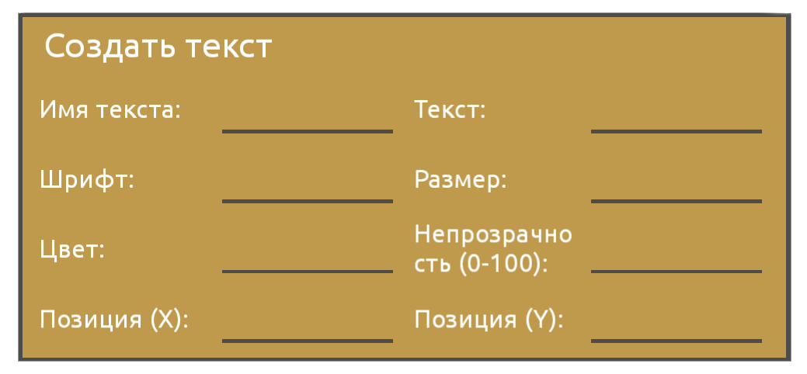

Создать текст

Блок Создать текст отвечает за вывод текста на экран
У блока Создать текст есть 8 параметров.
Имя текста - Имя, которое будет использовоться для дальнейших изменений этого текста
Текст - сам текст, который будет показываться
Шрифт - шрифт текста (ubuntu/sans)
Цвет - цвет текста в RGB формате(HEX будет автоматически переведен в RGB)
Непрозрачность - непрозрачность текста от 0 до 100(0- не видно, 100 - видно)
Позиция(X) - позиция по оси X (0 - центр)
Позиция(Y) - позиция по оси Y (0 - центр)